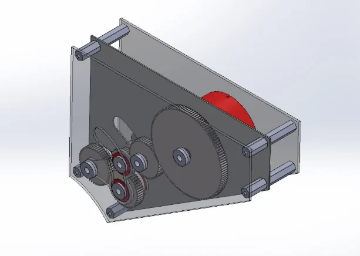
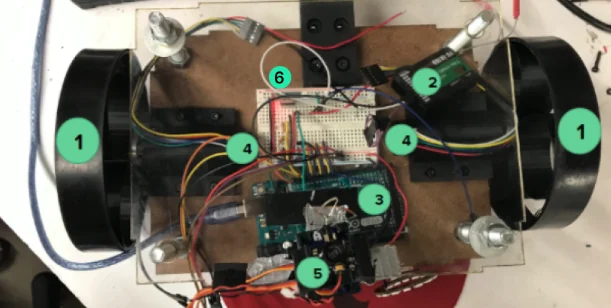
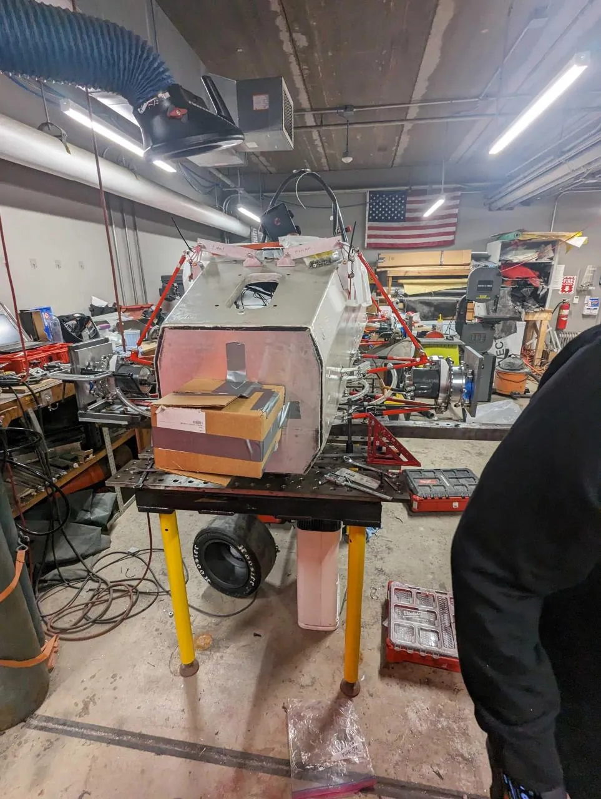

June 2026 – present
Test Engineer, Development Test
SpaceX
I own test campaigns on the Development Test team, from stand design through data acquisition and analysis.
Test engineer
Development Test, SpaceX
I own test campaigns from stand design through data acquisition and analysis.
01
I’m a test engineer on SpaceX’s Development Test team. From cryogenics to explosives, I work in demanding, fast-moving environments where every test has to earn its place. I own campaigns end to end, from stand design through data acquisition to the numbers that drive the next design decision.
Before SpaceX I was at Westinghouse, first on hardware qualification for the eVinci microreactor and then in transient analysis. I earned a B.S. and an M.S. in mechanical engineering at Carnegie Mellon, and from 2021 to 2024, I worked on Carnegie Mellon Racing in structures, chassis validation, the driver interface, and welding. I also staffed TechSpark, the campus fabrication lab.
Beyond work
English, native. Korean, limited working proficiency. Working toward an FAA private pilot license, with Part 107 to follow.
02
June 2026 – present
SpaceX
I own test campaigns on the Development Test team, from stand design through data acquisition and analysis.
Nov 2025 – May 2026
Pittsburgh, Pennsylvania
Westinghouse Electric Company
I ran safety-critical transient simulations for advanced nuclear systems. Behavioral models improved predictive accuracy for off-normal events by 20% over prior failure-rate data. I turned the results into hardware requirements with design and safety teams.
Aug 2024 – Nov 2025
Pittsburgh, Pennsylvania
Westinghouse Electric Company
Hardware qualification for the eVinci microreactor. I wrote test procedures, supervised technician execution, and integrated LabVIEW data acquisition with pressure, temperature, and flow instrumentation. I automated the data pipeline in MATLAB and Python, cutting iteration time by 15%, and used ANSYS during an X-ray root-cause investigation of heat-pipe thermal warping.
Summer 2023
Erie, Pennsylvania
Wabtec Corporation
I validated fire suppression and pneumatic brake systems on a battery-powered locomotive test stand, and stepped into production work when the plant was short-staffed.
Oct 2021 – Dec 2024
Pittsburgh, Pennsylvania
Carnegie Mellon Racing
Formula SAE. I led TIG welding in steel, aluminum, and titanium, with jigs and fixtures for the fabrication team, plus chassis validation against FEA and composite driver-interface hardware.
May 2024 · Dec 2024
Pittsburgh, Pennsylvania
Carnegie Mellon University
B.S. May 2024, GPA 3.82. M.S. December 2024, GPA 4.0.
03

Capstone · Spring 2024
A drivetrain that stores energy in an elastic band while the bike coasts and gives it back from a stop. No motor and no battery.
Most Innovative, CMU Design Expo 2024.
Read the build

Mechatronics · Fall 2023
A ground robot for remote search. Live FPV video, a two-axis gimbal steered by an IMU, and Bluetooth HC-05 / HC-06 between the operator and the vehicle. Built for $390 of a $450 budget.
Read the build
Summary · Carnegie Mellon Racing
TIG welding in steel, aluminum, and titanium for a Formula SAE car. Designed jigs and fixtures, including a modular jig system that cut weld setup time by 50%, and trained the fabrication team.

Summary · 2022–2023
Designed and built a rig to measure chassis rigidity on the 2023 Formula SAE car and compare it with FEA. The measurements went back into structural decisions.
Structural systems on 24E being torsionally tested
Summary · 2023–2024
Led driver-interface composites from CAD and FEA through layup and installation. A carbon-fiber headrest came out 50% lighter and still met the structural rules. The layup was shortened by 15%.
04